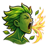
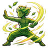

Spring Time of Youth Meditation D
Meditate for a while: wounds close and chakra flows faster.
| Rank | Chakra | Cooldown | Class level |
|---|---|---|---|
| D | 8 | 10 s | 2 |
Technique trees › Universal taijutsu
5 techniques · Taijutsu tab
Unlocks through World of Naruto's own trees, a gene, a build choice or a profession.
Meditate for a while: wounds close and chakra flows faster.
| Rank | Chakra | Cooldown | Class level |
|---|---|---|---|
| D | 8 | 10 s | 2 |

A mighty shout rattles every enemy close by.
| Rank | Chakra | Cooldown | Class level |
|---|---|---|---|
| D | 8 | 10 s | 3 |
A shout with the force of the spirit: enemies around are knocked senseless.
| Rank | Chakra | Cooldown | Class level |
|---|---|---|---|
| C | 14 | 15 s | 7 |

Move in harmony with the battle for a fight.
| Rank | Chakra | Cooldown | Class level |
|---|---|---|---|
| C | 14 | 15 s | 6 |
Ignore pain and trauma for a fight.
| Rank | Chakra | Cooldown | Class level |
|---|---|---|---|
| B | 24 | 25 s | 10 |